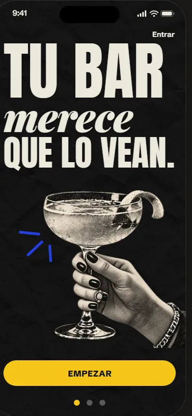
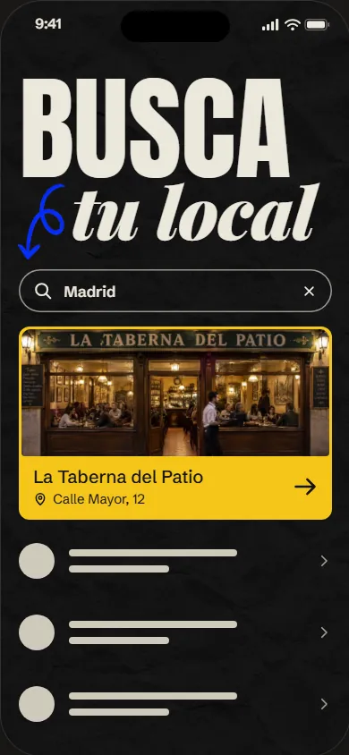
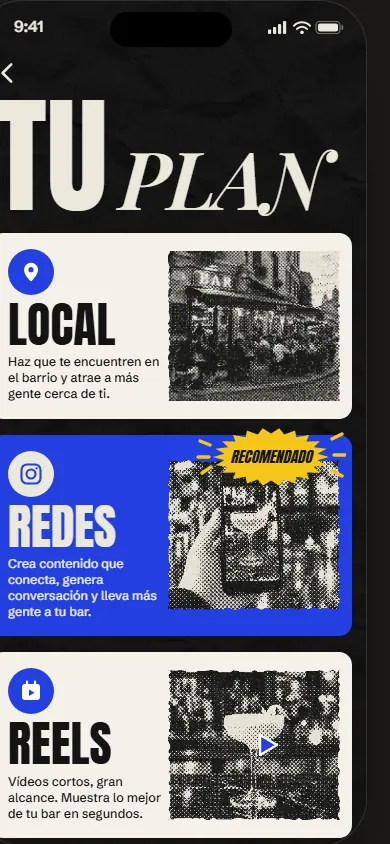
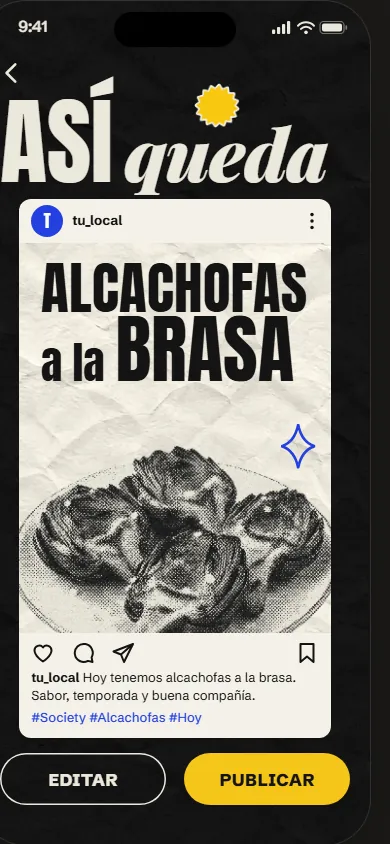
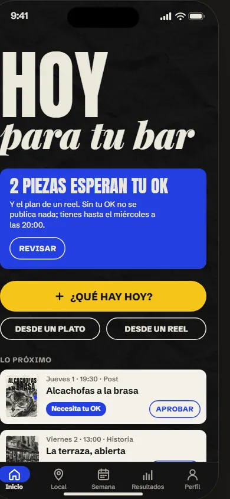
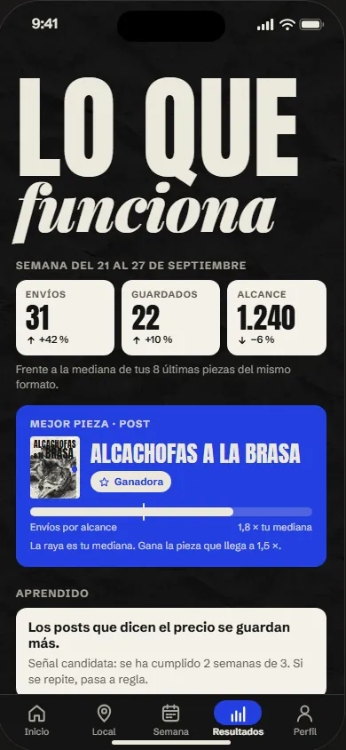

Ttu_local
tu_local Hoy tenemos alcachofas a la brasa. Sabor, temporada y buena compañía.
#Society #Alcachofas #Hoy
Society · prototipo v2 · 27/09/2026
La misma app con la forma de una app de estudio: fondo claro, tarjetas grandes con foto, píldoras y botones redondos. Mismos cuatro colores, otro reparto. Se toca igual que la v1.

Contenido real de tu local, publicado y medido cada semana. Tú solo das el OK.
Lo encontramos en Google y rellenamos tus datos por ti.
Escribe el nombre de tu bar o tu calle. Buscamos a partir de tres letras.
¿EStuyo?
La Taberna del Patio · Calle Mayor, 12

Publicamos y medimos donde está tu clientela.
Se suman: Redes incluye Local, y Reels incluye Redes. Toca uno para ver qué trae.

tu_local Hoy tenemos alcachofas a la brasa. Sabor, temporada y buena compañía.
#Society #Alcachofas #Hoy
¿CUÁNDOsale?
ALCACHOFAS
A LA BRASA
Se ha compartido 1,8 veces más que tu mediana.
1,8×Apruebas la semana entera.

Nada programado este día.
Frente a la mediana de tus 8 últimas piezas del mismo formato.
Mejor pieza · Post
ALCACHOFAS A LA BRASA
GanadoraLa raya es tu mediana. Gana la pieza que llega a 1,5 ×.
Aprendido
Los posts que dicen el precio se guardan más.Señal candidata: se ha cumplido 2 semanas de 3. Si se repite, pasa a regla.Próxima medición: +72 h, el jueves.
Calle Mayor, 12 · Madrid · Abierto, cierra a las 00:00
LA TABERNA DEL PATIO
@tu_local · Madrid
Las doce pantallas de la versión estudio a la vez. Toca una para abrirla en el prototipo.
Tus dos referencias son apps de estudio: fondo claro, piezas oscuras y un solo color de marca en bloques. Aquí se aplica eso con la paleta de Society y sin tocar lo que hace cada pantalla.
En la v1, tinta era el fondo y mostaza el botón. El modo oscuro no se pierde: el conmutador del prototipo lo enseña con estas mismas piezas.
App NFT
Esquinas de 28, foto a sangre, velo oscuro abajo y píldoras de cristal encima. Busca tu local, Tu plan, Inicio.
App NFT
Círculos de 46 para atrás, avisos, editar y más. Sobre foto, de cristal.
App NFT
Píldoras de 40; la elegida en tinta. Busca, Inicio, Resultados y el formato.
App NFT
Píldora oscura con tres datos y separadores. Inicio, Resultados, Local y Perfil.
App NFT
Píldora de 66 con pomo mostaza que se arrastra hasta el final. Se puede tocar también. Bienvenida.
App NFT
El botón principal es una píldora tinta de 62 con un círculo mostaza y flecha a la derecha. Todas las pantallas.
App NFT
Píldora tinta separada de los bordes, pestaña activa en cobalto con su nombre y crear en el centro.
App de cursos
Bloque de color cortado en diagonal y una figura recortada que lo cruza. Bienvenida.
App de cursos
Foto dentro de un cuadrado girado 45° que se sale de la pantalla, con una cifra grande encima. Inicio.
App de cursos
Etiqueta gris en Anton sobre titulares de 46 a 54. Anton ya era la letra de Society.
App de cursos
Botón en Anton inclinado 10°, para acciones dentro de un bloque. Inicio.
App de cursos
Tarjetas en fila con la siguiente asomando, y el paso actual como un guion largo. Tu plan, Inicio y el alta.
A la izquierda, la v1 editorial tal como está publicada; a la derecha, la misma pantalla en la versión estudio.
Bienvenida

Busca tu local

Tu plan

Así queda

Inicio

Resultados
